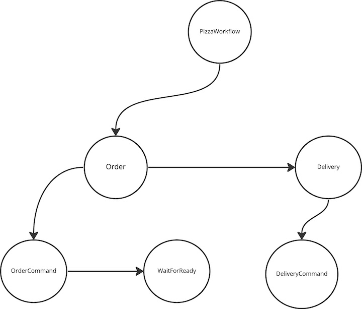

Dagger - 0.1.9


Dagger is a distributed, scalable, durable, and highly available orchestration engine to execute asynchronous and
synchronous long-running business logic in a scalable and resilient way.
Dagger requires Python 3.7 or later for the new async/await_ syntax, and variable type annotations.
Pizza Ordering and Delivery Workflow Example
Here's an example of how to use the library to build and run a Pizza Ordering Workflow:

The PizzaWorkflow consists of 2 Processes:
- Order : Responsible for communicating with the order service to place a pizza order(CommandTask) and wait for the order to be ready(ListenerTask)
- Delivery: Once the order is ready, this process communicates with the delivery service to start delivery of the pizza order(CommandTask)
Step 1 Instantiate Dagger
workflow_engine = Dagger(
broker=KAFKA_ADMIN_CLIENT_URL,
store="aerospike://",
consumer_auto_offset_reset="latest",
task_update_topic="task_update_topic",
trigger_interval=600,
aerospike_config=aerospike_config,
enable_changelog=False,
web_port=6066,
serializer="raw",
)
Step 2 Define Leaf Command and Listener Tasks For Order Process
Let's assume that the Order Microservice processes incoming orders over a Kafka Topic - pizza_order_topic with the
JSON schema
{
"order_id": "id",
"pizza_type": "1",
"customer_id": "customer_id"
}
Using this information let's build out the OrderCommandTask by overriding the execute method that implements the
business logic on how to send the payload to the Order Service over a Kafka topic
class OrderCommandTask(KafkaCommandTask[str, str]):
async def execute(
self,
runtime_parameters: Dict[str, str],
workflow_instance: ITemplateDAGInstance,
) -> None:
payload = {
"order_id": runtime_parameters["order_id"],
"customer_id": runtime_parameters["customer_id"],
"pizza_type": runtime_parameters["pizza_type"],
}
await workflow_engine.topics[self.topic].send(
value=json.dumps(payload)
)
After executing the OrderCommandTask, the workflow should enter a WAIT_STATE until it receives a message from the
OrderService about the status of the order. Let's assume that Order Service sends a message on a Kafka Topic:
order_status_topic when the order is ready in the following JSON format
{
"order_id": "id",
"status": "READY"
}
Let's model the OrderListenerTask to process this message on the order_status_topic by implementing the
get_correlatable_keys_from_payload and on_message methods on the Listener. It also needs to specify the correletable_key
as order_id to look up the payload
class PizzaWaitForReadyListener(KafkaListenerTask[str, str]):
correlatable_key = "order_id"
async def get_correlatable_keys_from_payload(
self, payload: Any
) -> List[TaskLookupKey]:
tpayload = json.loads(payload)
key = tpayload[self.correlatable_key]
return [(self.correlatable_key, key)]
async def on_message(
self, runtime_parameters: Dict[str, VT], *args: Any, **kwargs: Any
) -> bool :
logger.info(f"Pizza Order is Ready")
return True
When the order service sends a status message on the order_status_topic, Dagger invokes the get_correlatable_keys_from_payload
to determine which workflow instance that message belongs to. Once it determines the workflow instance, it invokes
on_message on the corresponding ListenerTask
Now that we have the LEAF tasks modeled, lets attach them to the parent Order Process
def pizza_ordering_process(
process_name: str = "Order"
) -> IProcessTemplateDAGBuilder:
dag_builder = DAGBuilderHelper(dagger_app=workflow_engine)
root_task = dag_builder.build_and_link_tasks(
[
dag_builder.generic_command_task_builder(
topic="pizza_order_topic",
task_type=OrderCommandTask,
process_name=process_name,
),
dag_builder.generic_listener_task_builder(
topic="PizzaWaitForReadyListener",
task_type=PizzaWaitForReadyListener,
process_name=process_name,
),
]
)
return dag_builder.generic_process_builder(process_name=process_name, root_task=root_task)
The Order Process is in COMPLETED when both the CommandTask and the PizzaWaitForReadyListener are COMPLETED and then
the workflow transitions to execute the next Process Delivery
Step 3 Define Leaf Command Tasks For Delivery Process
Let's assume that the delivery service just requires an HTTP POST request with the following schema
{
"order_id": "id",
"customer_id": "customer_id"
}
We can model the DeliveryCommandTask to POST this payload by implementing the execute method as follows
class DeliveryCommandTask(ExecutorTask[str, str]):
async def execute(
self, runtime_parameters: Dict[str, VT], workflow_instance: ITask = None
) -> None:
payload = {
"order_id": runtime_parameters["order_id"],
"customer_id": runtime_parameters["customer_id"],
}
async with aiohttp.ClientSession() as session:
async with session.post(url="http://www.deliverysvc.com", json=payload):
pass
Let's attach this to the parent Delivery Process
def pizza_delivery_process(
process_name: str = "Delivery",
) -> IProcessTemplateDAGBuilder:
dag_builder = DAGBuilderHelper(dagger_app=workflow_engine)
root_task = dag_builder.build_and_link_tasks(
[
dag_builder.generic_executor_task_builder(
task_type=DeliveryCommandTask,
name=process_name,
)
]
)
return dag_builder.generic_process_builder(
process_name=process_name, root_task=root_task
)
Step 4 Define the Sequence of Process Execution and register the workflow definition using register_template
Based on the workflow, we want the Order Process to execute first before the Delivery Process. The workflow ensures
that the Delivery tasks are executed only after both the tasks in the Order process are in a terminal state
@Dagger.register_template("PizzaWorkflow")
def register_pizza_workflow(template_name: str) -> ITemplateDAG:
dag_builder_helper = DAGBuilderHelper(workflow_engine)
order_process = dag_builder_helper.build_and_link_processes(
[
pizza_ordering_process(process_name="Order"),
pizza_delivery_process(process_name="Delivery"),
]
)
return dag_builder_helper.generic_template(
template_name=template_name, root_process=order_process
)
Step 5 Define an API to instantiate and execute pizza order workflows
async def create_and_submit_pizza_delivery_workflow(
order_id: str, customer_id: str, pizza_type: int
):
pizza_workflow_template = workflow_engine.template_dags["PizzaWorkflow"]
pizza_workflow_instance = await pizza_workflow_template.create_instance(
uuid.uuid1(),
repartition=False, # Create this instance on the current worker
order_id=order_id,
customer_id=customer_id,
pizza_type=pizza_type,
)
await workflow_engine.submit(pizza_workflow_instance, repartition=False)
Step 6 Start the worker
workflow_engine.main()
Where to Start?
To learn the basics of how to start using dagger, read the Getting Started page.
Detailed Documentation
To learn more about the various ways dagger can be used, read the Usage Guide page.
API Reference
To find detailed information about a specific function or class, read the API Reference.
Example
Take a look at the Test App based on Dagger